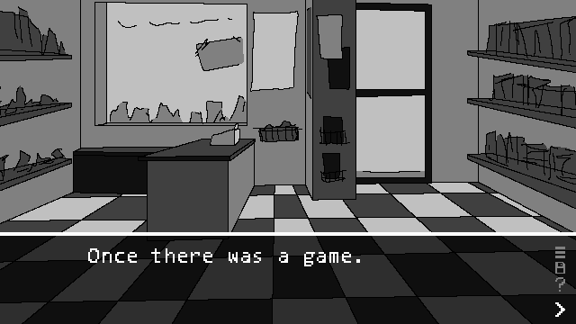
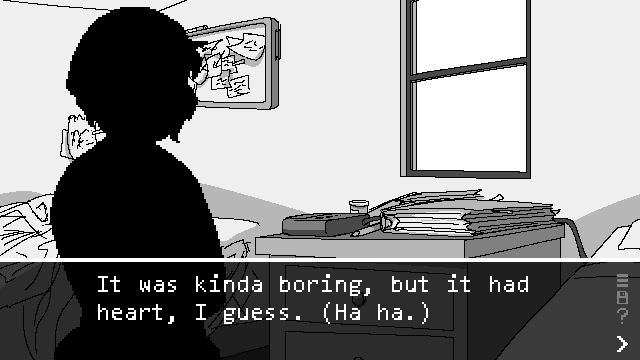
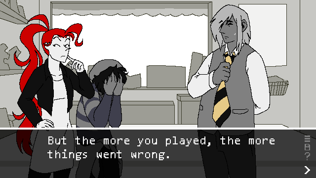
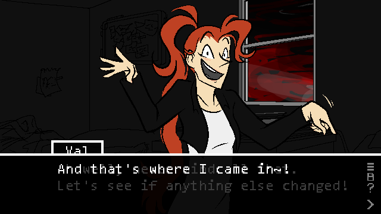

Blank page, black void. A brief narrative, presented in four “screenshots” of a grayscale visual novel-esque game.

“Once there was a game.”

“It was kinda boring, but it had heart, I guess. (Ha ha.)”

“But the more you played, the more things went wrong.”

“And that’s where I came in!” The speaker is an enthusiastic character called “Val,” whose colorful introduction marks a departure from the game sprites.